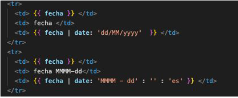
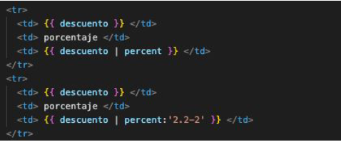

Pipes
Son funciones simples que se usan para transformar datos.
Aceptan un valor de entrada y devuelven un valor transformado (sin modificar el original).
Pipes integradas:
Transforma una fecha en una cadena según el formato indicado
Transforma una cadena a mayúsculas
Sintasis: stringToTransform | uppercase
Transforma una cadena a minúsculas
Sintasis: stringToTransform | lowercase
Transforma un número en una cadena con formato de moneda
Transforma un número en una cadena según el formato indicado Sintasis: numberToTransform | number [:digitInfo]
Formatea un número como un porcentaje
Crea un nuevo array o cadena que contendrá un subconjunto de los elemento del original
Sintasis: arrayOrStringToTransform | slice: start [:end]
Permite que nos suscribamos a un Observable o a un Promesa desde la plantilla y devuelve el valor que emiten.
Convierte un objeto en su representación en JSON.